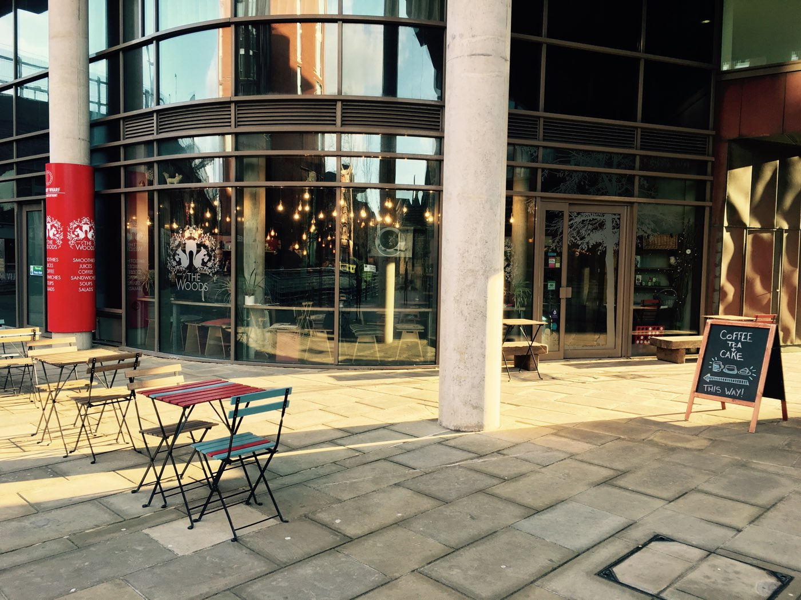
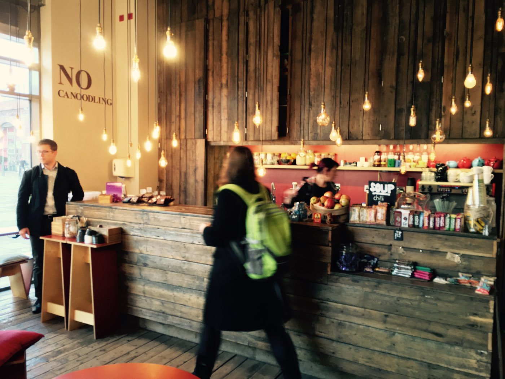
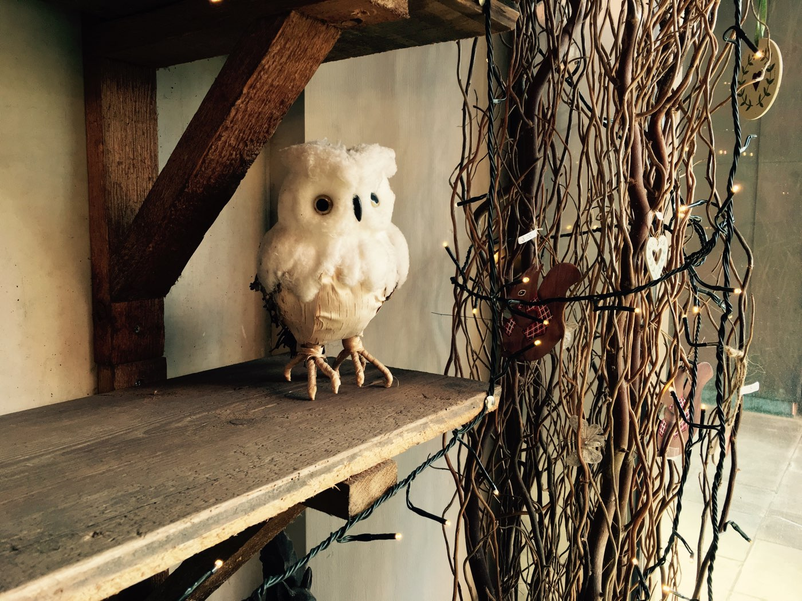
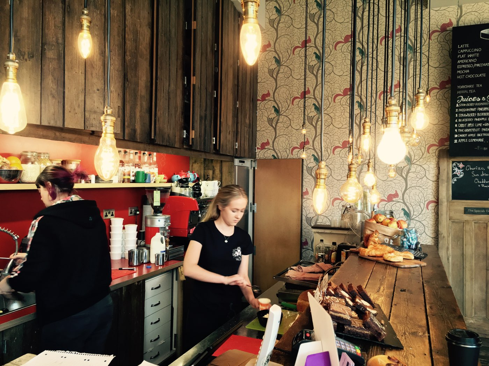
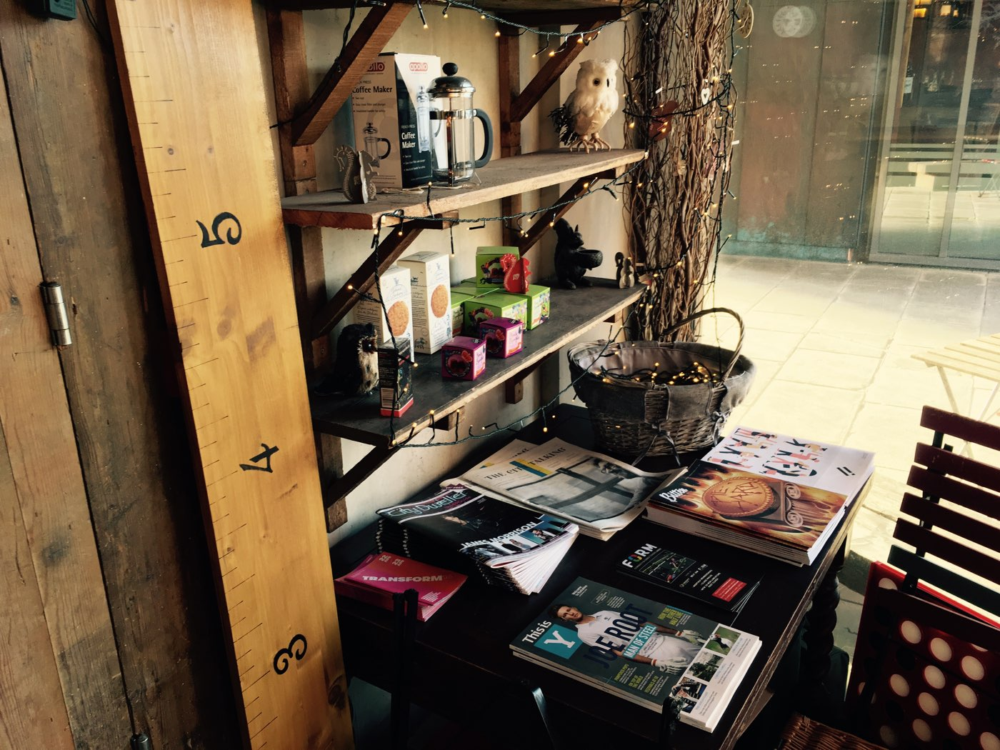
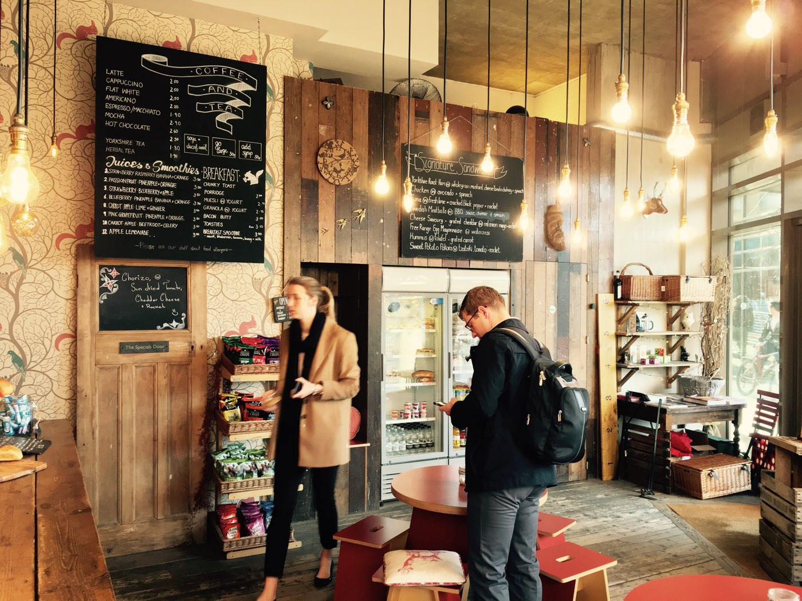

Hang a right as you emerge from the new Leeds train station exit and you may stumble across this indoor woodland at Granary Wharf. Good coffee, waterfront views and friendly staff will keep you company here. Outdoor seating is available during the warmer months. They have a sister shop over on Water Lane.
Where: Granary Wharf, Watermans Place, Leeds, LS1 4GL
House Blend: Dark Woods Espresso
WiFi: Free - open
Soya: Yes - no extra charge (though this will change soon apparently 🙁)
Website - outofthewoods.me.uk | Twitter - @outofthewoodsuk | Instagram - @outofthewoodsuk | Facebook - Out of the Woods
     